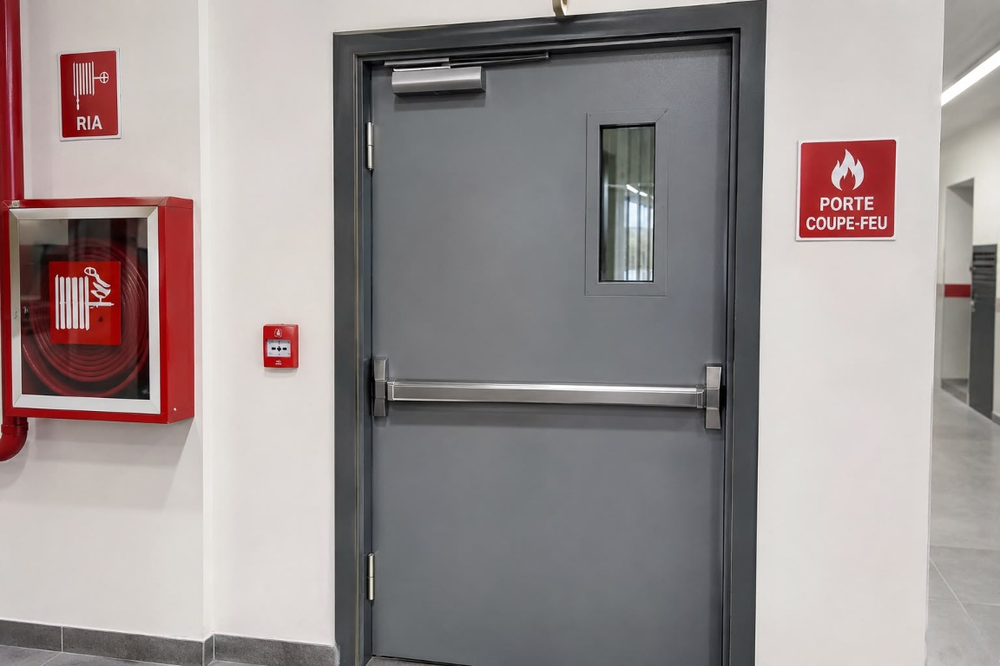

01
Industrie & commerces
Pour organiser les zones et sécuriser les accès dans les bâtiments industriels et commerciaux.


Nos solutions
Des équipements pensés pour contribuer à la sécurité des personnes et des bâtiments.
Sécurité des bâtiments
LVC DISTRIBUTION propose des solutions de protection passive conçues pour contribuer à la sécurité des bâtiments et à limiter la propagation du feu.
Nous accompagnons les professionnels du bâtiment, entreprises de construction, architectes, bureaux d’études et maîtres d’ouvrage dans leurs projets.
Notre solution
En cas d’incendie, elle contribue à ralentir la propagation des flammes et des fumées entre les différentes zones, et à sécuriser les circulations et les issues.
Le choix d’une porte doit tenir compte des exigences et des usages propres à chaque bâtiment.
Des usages variés
Nos solutions s’intègrent dans différents types de bâtiments et d’espaces professionnels.
Pour organiser les zones et sécuriser les accès dans les bâtiments industriels et commerciaux.
Pour accompagner la sécurité des circulations dans les établissements recevant du public.
Pour contribuer au compartimentage des espaces de travail et des circulations communes.
Pour protéger les accès aux zones techniques et aux espaces de stationnement.
Ressources techniques
Consultez la documentation et les documents fournis pour vos projets de protection incendie.
Un projet spécifique ?
Notre équipe vous accompagne dans le choix des solutions adaptées à votre projet.
Nous contacterVotre partenaire
de confiance